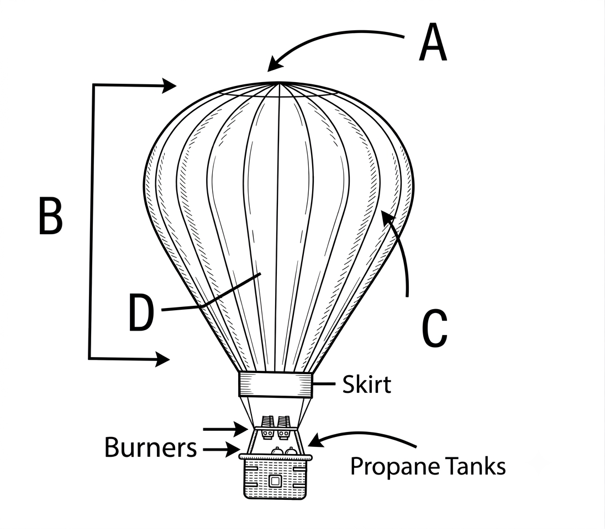

Passage 1: HOT AIR BALLOONING
The birth of the hot air balloon is largely contributed
to the efforts of two French brothers, Joseph and Etienne
Montgolfier, who employed the fact that hot air was lighter
than cool air and using this, managed to lift a small silk
balloon 32 metres into the air. The brothers went on to
elevate a balloon into the air ten thousand metres before
it started to descend and then exploded. Arguably limited
success, but their work came to the eye of the French Science
Academy as the discovery of the properties of hot air balloons
helped scientists to study weather patterns and the atmosphere.
It was not until some considerable time later that a balloon
was launched that was capable of carrying passengers. Initial
flights were trialled by animals, but after the success of
these voyages, two passengers, Jean Francois Pilatre and
Francois Laurent d'Arlendes, were sent up in a balloon which
travelled across Paris for 29 minutes. The men fuelled the fire
in the centre of their wicker basket to keep the balloon
elevated and the trip across Paris was a great success.
The discovery of hydrogen-fuelled flights led to the death
in 1785 of Pilatre, a tragedy which caused a downfall in the
popularity of hot air ballooning but an increase in the
popularity of hydrogen. Hot air ballooning lost further ground
when alternate modes of air travel were introduced, but in the
1950s, ballooning experienced something of a revival as a
leisure activity and sport. Today there are balloons of all
shapes and sizes, with many unique designs.
In 1987, British entrepreneur Richard Branson crossed the
Atlantic in a balloon named Virgin Atlantic Flyer. At the
time, this balloon was the largest ever constructed at 65
thousand cubic metres, but four years later, he and Per
Lindstrand from Sweden flew nearly 8000 kilometres from Japan
to Northern Canada in their balloon the Virgin Pacific Flyer,
which was nearly 10 thousand cubic metres bigger and was the
longest flight in a hot air balloon ever made. The Pacific
Flyer was designed to fly in the trans-oceanic jet streams
and recorded the highest ground speed for a manned balloon at
394 kilometres per hour.
There are now a wide variety of designs and equipment available,
from baskets with room for two people right up to 35 or more,
separated compartments and specially designed flame resistant
fabrics, but the basic parts of the balloon have remained
relatively unchanged. There is a basket, commonly made of
wicker, inside which are stored the propane fuel tanks.
Immediately above the basket and partly wrapped around by the
skirt are the burners, attached on suspension wires.
The balloon itself is made of strips of fabric called gores
which run from the skirt to the top of the balloon; they are
further broken into individual panels. This section of the
craft is referred to as the envelope. At the top of the
envelope is a self closing flap that allows hot air to escape
at a controlled rate to slow ascents or cause the balloon to
descend descents. This is named the parachute valve, and is
controlled by the vent line – the cable that runs the length
of the envelope and hangs just above the basket so the pilot
can open and close the parachute valve.
At the mercy of prevailing wind currents, piloting a balloon
takes a huge amount of skill but the controls used are fairly
straight forward. To lift a balloon the pilot moves the control
which releases propane. The pilot can control the speed of the
balloon by increasing or decreasing the flow of propane gas,
but they cannot control horizontal direction. As a result,
balloons are often followed by ground crew, who may have to
pick up the pilot, passengers and balloon from any number of
landing sites. A pilot who wants to fly a hot air balloon must
have his commercial pilot’s license to fly and must have at
least 35 hours of flight instruction. There are no official
safety requirements for passengers onboard, but they should
know whom they’re flying with and what qualifications they may
have. For safety reasons, hot air balloons don’t fly in the
rain because the heat in the balloon can cause water to boil on
top of the balloon and destroy the fabric.
One of the largest hot air balloon organisations is the Balloon
Federation of America. Founded in 1961, membership in the BFA
attracts those with a fascination with ballooning (or ‘Lighter
Than Air’ flight). With an active discussion forum, meetings
and displays all around the USA and beyond, the BFA runs on a
number of guiding principles, primarily that the future of
ballooning is directly related to the safety of enthusiasts.
They run a number of training courses, from a novice who is
interested in getting a basic licence to pilot achievement
courses. They even boast of a balloon simulator, which although
will not directly lead to a pilot’s license, it can give
participants a degree of the sensation enjoyed by professional
balloon pilots.
Questions 1–4
Do the following statements agree with the information
given in the reading passage?
TRUE
if the statement agrees with the information
FALSE
if the statement contradicts the information
NOT GIVEN
if there is no information on this
Questions 5–7
Answer the questions below using
NO MORE THAN THREE WORDS AND/OR A NUMBER
from the passage for each answer.
Questions 8–11
Label the diagram below using
NO MORE THAN TWO WORDS
from the passage for each answer.
